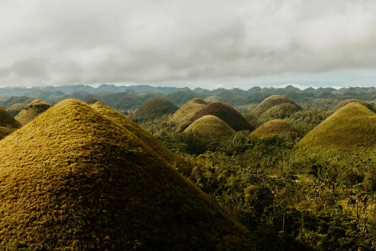

Chocolate Hills, Bohol
More than a thousand cone-shaped hills that turn brown in the dry season.
Home / Destinations / Chocolate Hills, Bohol · Bohol, Central Visayas
About Chocolate Hills, Bohol
The Chocolate Hills are a field of nearly identical, grass-covered mounds that stretch across the middle of Bohol. In the dry season the grass turns brown and the hills look like piles of chocolate, which is how they got their name.
They are a National Geological Monument. Local legends explain them in different ways, from a giant's thrown rocks to a giant's tears.
Around the hills
- Viewing deck in Carmen: climb the steps for a wide view of the hills.
- Tarsier sanctuary: meet the tiny primates that live in Bohol.
- Loboc River cruise: a relaxed lunch on the water, not far from the hills.
Travel tip
In the rainy season the hills are green, which is just as beautiful. The brown color is only a dry-season change.
Photo gallery

Watch: Chocolate Hills, Bohol
If the embedded video shows Error 153, open this website through a local web server (for example VS Code Live Server) instead of opening the HTML file directly.
Open this video on YouTube (opens in a new tab)
Want more? Search for Chocolate Hills, Bohol videos on YouTube (opens in a new tab).
Things to book
Bohol countryside tour
Chocolate Hills, tarsiers and more in one day.
Find tours for Bohol countryside tour (opens in a new tab)Loboc River cruise
A relaxed lunch cruise on the water.
Find tours for Loboc River cruise (opens in a new tab)Chocolate Hills ATV adventure
Ride through the countryside around the hills.
Find tours for Chocolate Hills ATV adventure (opens in a new tab)Balicasag island hopping
Snorkeling and island stops off Panglao.
Find tours for Balicasag island hopping (opens in a new tab)
Plan and book your trip to Chocolate Hills, Bohol
Compare tours and places to stay on these booking sites. Prices and availability change, so check the details before you pay.